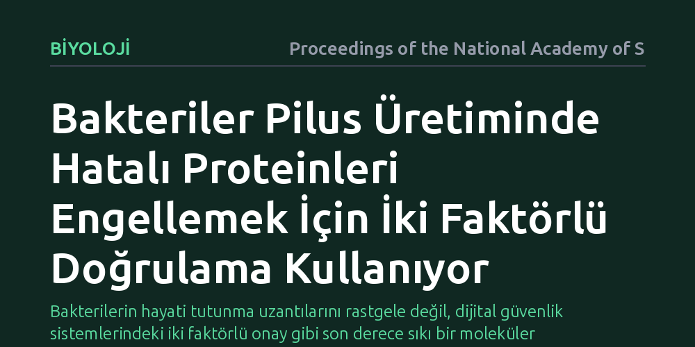

BIYOLOJI · Proceedings of the National Academy of Sciences · 2026-09-12
Gram-pozitif bakterilerin onlarca benzer yüzey proteini arasından sadece doğru yapı taşlarını seçerek pilus uzantılarını nasıl ördüğü araştırıldı. C sınıfı sortaz enziminin, yanlış proteinlerin eklenmesini önlemek amacıyla pilinleri iki aşamalı bir güvenlik mekanizmasıyla doğrulayarak üretime aldığı bulundu.
Bakterilerin hayati tutunma uzantılarını rastgele değil, dijital güvenlik sistemlerindeki iki faktörlü onay gibi son derece sıkı bir moleküler denetimle inşa ettiğini gösterir.

Gram-pozitif bakterilerin dış yüzeyinde, dokulara yapışmalarını, diğer mikroplarla kümelenmelerini ve biyofilm adı verilen koruyucu tabakalar oluşturmalarını sağlayan pilus adlı mikroskobik saç telleri bulunur. Bu lifler bakterilerin konak dokusuna tutunmasında kritik bir role sahiptir; örneğin difteri veya kalp zarı iltihabı gibi tablolarda bakterinin dokuya tutunabilmesi tamamen bu uzantılara bağlıdır. Ancak bu uzantıların inşası hücre için muazzam bir lojistik meydan okumadır.
Bakteri hücresinin yüzeyinde, hücre duvarına tutturulmayı bekleyen yüzlerce farklı protein türü yer alır. Bu proteinlerin birçoğu, peptidoglikan tabakasına bağlanmak için birbirine çok benzeyen hücre duvarı ayıklama sinyalleri taşır. Eğer pilusları inşa eden enzim, önüne gelen her yüzey proteinini rastgele bu liflerin arasına katarsa, uzantılar işlevsiz hale gelir ve hücre ölümcül bir enerji israfına uğrar. Dolayısıyla bilim insanlarının önündeki temel soru şuydu: Bakteri enzimleri, benzer sinyallere sahip onlarca protein arasından yalnızca pilin adı verilen yapı taşlarını nasıl kusursuz bir kesinlikle seçip lif haline getirir?
Araştırmacılar bu seçilim gizemini aydınlatmak için Gram-pozitif bakterilerde pilus inşasından sorumlu olan C sınıfı sortaz enzimlerini mercek altına aldı. Bu enzimler, hücre zarı seviyesinde çalışarak serbest pilin proteinlerini uç uca kovalent bağlarla bağlayan ve lif uzadıkça onu hücre duvarına sabitleyen moleküler montaj makineleridir. Ekip, enzimin alt birimlerini nasıl tanıdığını test etmek için saflaştırılmış proteinlerle laboratuvar ortamında biyokimyasal deneyler tasarladı.
Deneylerde hem standart hücre duvarı proteinlerinin sinyal dizileri hem de asıl pilin proteinlerinin taşıdığı dizilimler karşılaştırıldı. Araştırmacılar, proteinlerin amino asit dizilimlerinde sistematik mutasyonlar yaparak enzimin hangi durumlarda kesip bağlama yaptığını, hangi durumlarda ise proteini reddettiğini adım adım analiz etti. Böylece enzimin yalnızca klasik sinyal dizisine bakıp bakmadığı doğrudan test edildi.
Elde edilen bulgular, C sınıfı sortaz enzimlerinin tek bir sinyale güvenmediğini, tıpkı internet hesaplarındaki iki faktörlü kimlik doğrulama gibi çift katmanlı bir güvenlik kontrolü uyguladığını gösterdi. İlk faktör, hücre duvarı ayıklama sinyali üzerindeki genel bir tanıma motifidir; ancak bu motif tek başına enzimi harekete geçirmeye yetmemektedir. İkinci faktör olarak, sadece gerçek pilin proteinlerinde yer alan ek bir yapısal veya dizisel onay bölgesinin varlığı gerekmektedir.
Her iki faktör aynı anda doğrulanmadığı sürece sortaz enzimi aktifleşmemekte ve proteini polimerizasyon zincirine dahil etmemektedir. Bu çift onay mekanizması sayesinde, hücre duvarına yönlendirilen diğer yüzey proteinleri ortalıkta bulunsa bile sortaz tarafından elenir. Sistem, yanlış parçaların montaj hattına girmesini engelleyerek yalnızca lisanslı pilinlerin lif yapısına katılmasına izin vermektedir.
Bu bulgu, bakterilerin temel biyolojisine dair önemli bir boşluğu doldurmanın yanı sıra enfeksiyon tedavileri için yeni bir hedef alanı açmaktadır. Geleneksel antibiyotikler bakteriyi doğrudan öldürmeye çalıştığı için mikroorganizma üzerinde yoğun bir evrimsel baskı oluşturur ve bu durum antibiyotik direncinin hızla yayılmasına yol açar. Buna karşılık, bakteriyi öldürmek yerine onun dokulara yapışmasını engelleyen virülans karşıtı yaklaşımlar son yıllarda öne çıkmaktadır.
Bakterilerin pilus montajında kullandığı bu iki faktörlü onay kilidi çözüldüğünde, bu kontrol mekanizmasını yanıltan veya kilitleyen küçük moleküller tasarlanabilir. Enzimin ikinci doğrulama adımını engelleyerek pilus üretimini durdurmak, bakterinin vücuda tutunmasını ve biyofilm oluşturmasını önleyebilir. Bu sayede bakteri öldürülmeden zararsız hale getirilerek bağışıklık sisteminin enfeksiyonu temizlemesi kolaylaştırılabilir.